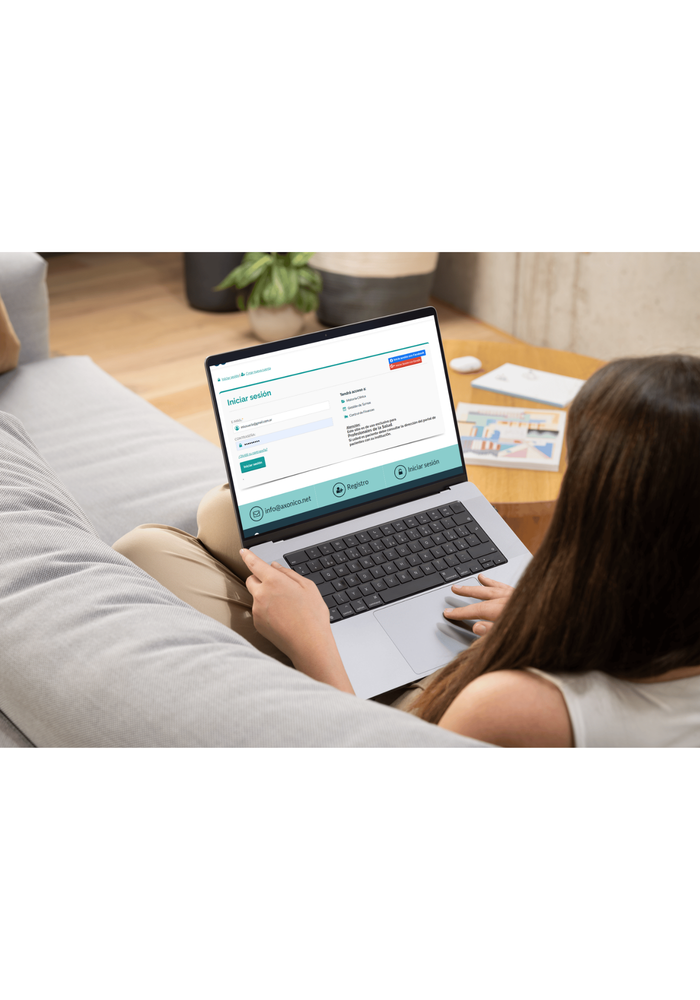

Plataforma
Axónico y web API
La carga de prestaciones, documentación e historia clínica se gestiona en plataformas digitales.
Guía rápida para profesionales
API está constituida por una amplia red de profesionales de diferentes especialidades: psiquiatras, psicólogos, psicopedagogos, acompañantes terapéuticos, entre otros.
Flujo principal
Lo que se debe tener en cuenta antes de arrancar.

La carga de prestaciones, documentación e historia clínica se gestiona en plataformas digitales.
Constancia de atención para modalidad virtual y planilla de firmas para modalidad presencial.
Reglas para ausencias sin aviso o cancelaciones con menos de 48 horas.
Datos mínimos, verificación de cobertura, copagos y autorizaciones especiales.
No encontré cards con ese término. Probá con otra palabra, detective 🕵️♀️
Normativas por institución
Procedimientos administrativos según Obra Social o Prepaga.
Valores por prestación
Los copagos varian segun la cobertura y el plan de cada socio. Estos son abonados por los pacientes al momento de la sesión y conforman parte de los honorarios.
Estos valores podrian sufrir cambios sin notificación previa.
Flujo recomendado
Un recorrido paso a paso para que la carga de las sesiones sea efectiva.
Flujo recomendado
Modalidad, firmas, constancias y control antes de enviar.
Facturación
Para una correcta generación de honorarios, las prestaciones deben cargarse en Axónico y contar con documentación respaldatoria.
Preferentemente el mismo día de atención en Axónico.
Planilla presencial o constancia virtual, según modalidad.
Importe exacto y envío al mail correcto en tiempo y forma.
Contactos
Ante cualquir duda, ponete en contacto con nosotros.